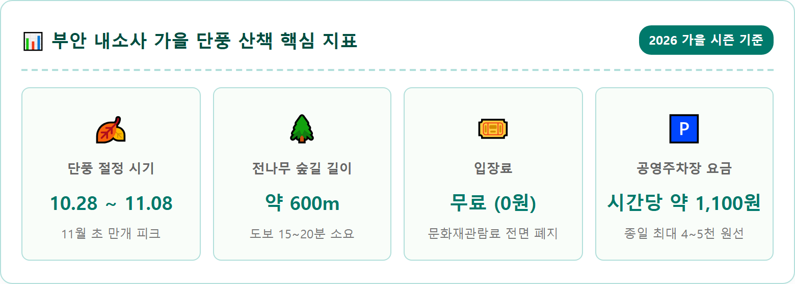
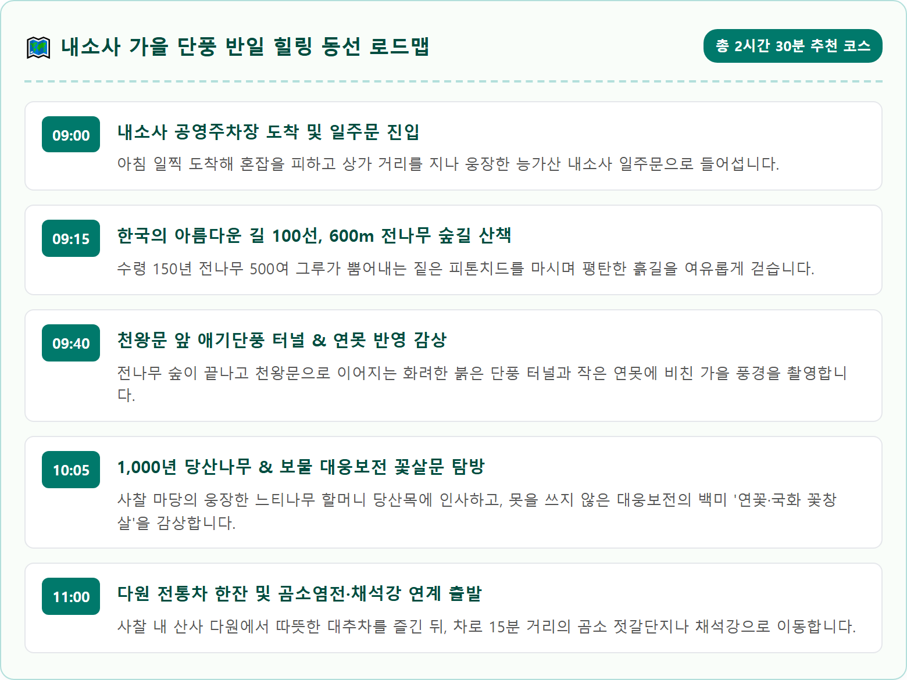
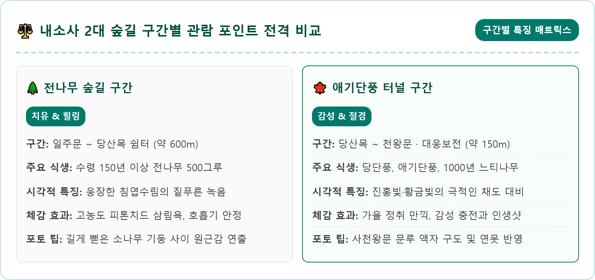
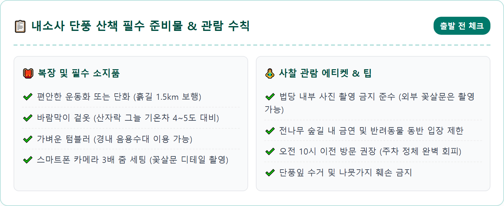
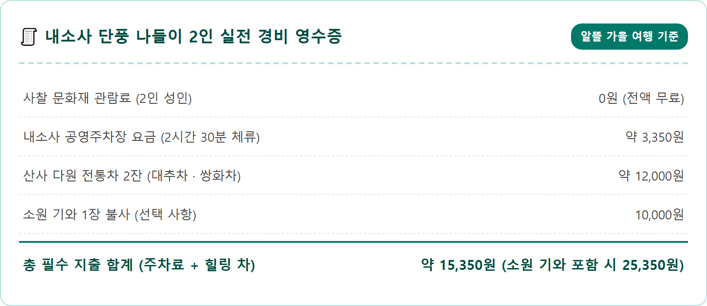
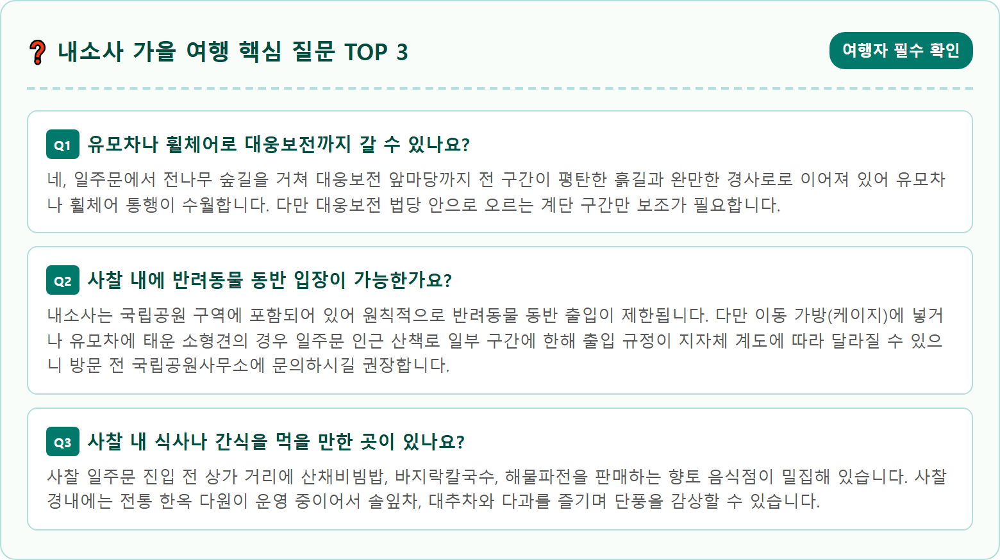

Cinematic wide-angle eye-level photograph of Naesosa Temple nestled in Byeonsanbando National Park in autumn, South Korea. Towering lush green fir tree forest path transitioning into vibrant fiery red and golden-yellow maple tree canopy leading to traditional Korean temple gates. Ancient wooden Daeungbojeon temple hall in background with intricate flower lattice wooden doors under soft morning sunlight, falling autumn leaves softly scattering across stone pathway, photorealistic, ultra-high resolution, 8k, serene spiritual autumn atmosphere, balanced lighting, fine texture, 1:1 aspect ratio.





